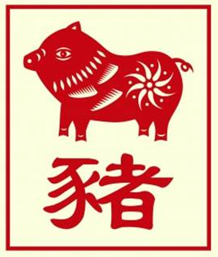

The Chinese Zodiac: Pig

- Fixed Season: Winter
- Fixed Direction: North-Northwest
- Fixed Element: Water/Ying
- Associated Sun Sign: Scorpio
Someone born under the sign of the pig tend to be a gentle person all around. With a strong interior grasp of their life and the people around them, they are able to spend much time both alone and in the company of others. Sometimes this can cause them to feel a little overwhelmed, as they might struggle to separate their thoughts from their immediate experience, but overall it is a strength that allows them to entertain leadership positions if they put the time and effort in.
Pigs tend to enjoy interacting with others and taking advantage of what interpersonal relationships can offer them. They understand how to converse with ease, even when they are sometimes feeling worn out or a little awkward inside, and they have an empathetic streak which tends to endear them to others. While their life will have its own series of bumps and troubles, the Pig will generally have one of the more satisfying experiences in life. Should they ever feel they are drifting away from the life they would like to lead then, they simply have to refocus their efforts and go after whatever it is that they believe will make them happy. For without this focused effort, it may take much longer to achieve that sort of guiding revelation.